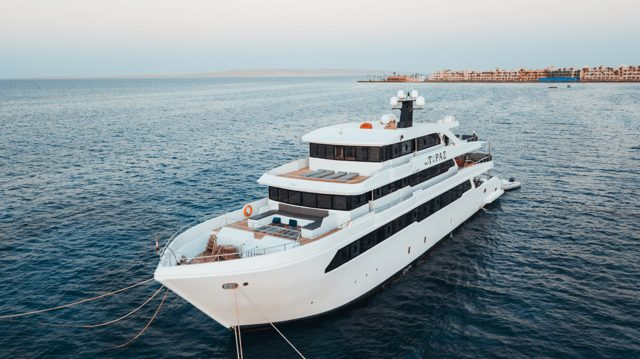
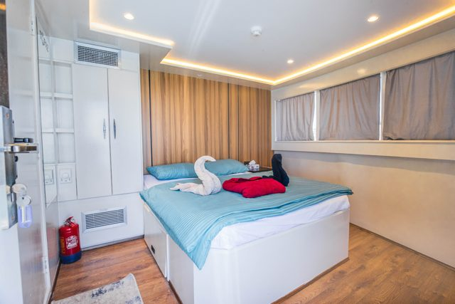
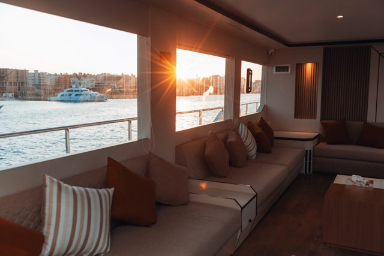
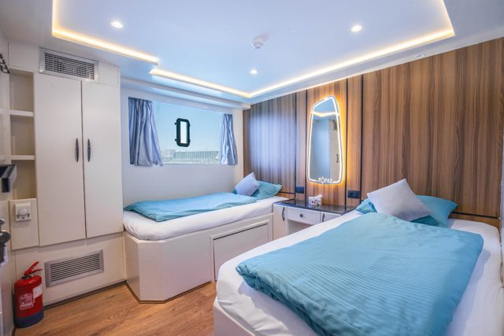
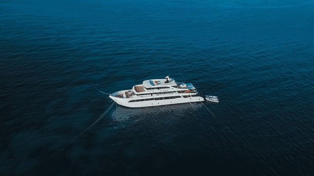
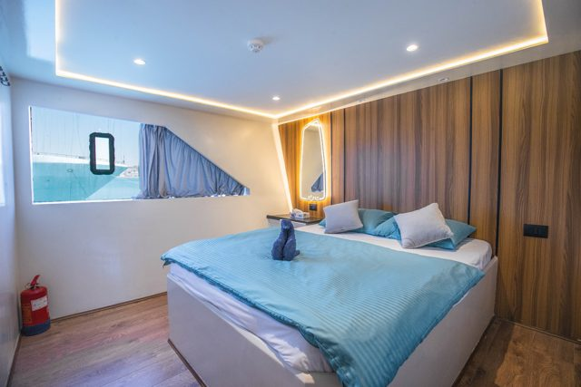
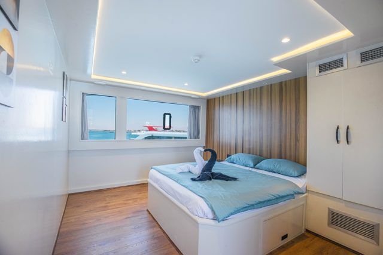
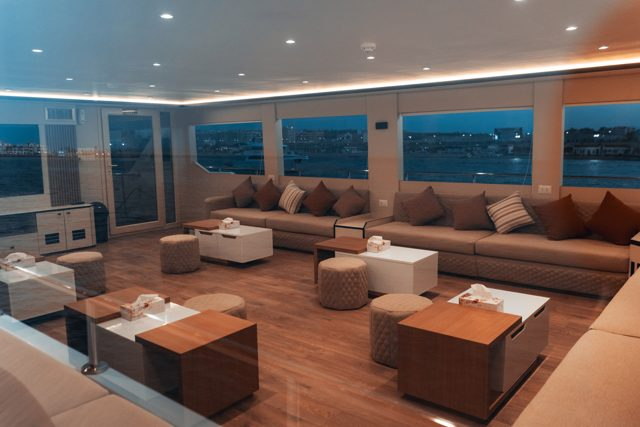
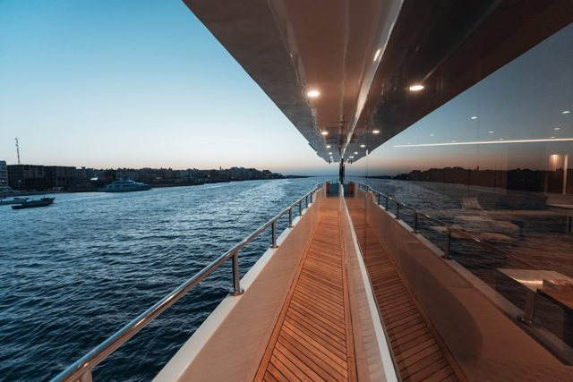
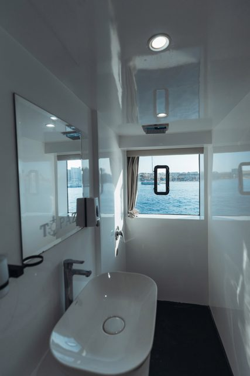

M.Y. TOPAZ.
Egypt’s Red Sea · Operated by Sea Pirates Egypt
We may receive a referral commission.
A closer look at your time on the water. Explore the yacht, cabins and life aboard before you plan your Red Sea trip.


Official M.Y. TOPAZ photographs · Sea Pirates Egypt
A look aboard.
Explore the spaces you’ll share between dives. Photographs are supplied by the operator; confirm your actual cabin and sailing with Sea Pirates Egypt.
11 photos


















Choose the sailing
that fits.
A boat is only part of the trip. Each Red Sea sailing has its own route and arrangements. These are the details to discuss with Sea Pirates Egypt.
View the operator’s scheduleSchedule information is supplied by the operator. Availability is confirmed with your enquiry.
- Dates & route
- Confirm departure dates, embarkation port and the planned itinerary.
- Your cabin
- Discuss the cabin type and availability for your sailing.
- Inclusions & extras
- Request an itemised quote so you can see what is included and what costs extra.
- Booking terms
- Review the operator’s payment, cancellation and refund terms before you book.
Your trip starts
with a conversation.
Tell us what you have in mind.
Your preferred dates, group size and interests help start the conversation.
We introduce you, with permission.
We introduce you by email. Sea Pirates Egypt registers the named referral under Macro Diving.
Plan directly with the operator.
Sea Pirates Egypt confirms the quote, booking terms and availability. You book and pay the operator directly.
Request your introduction.
The button opens an editable email. Keep the consent line if you want us to share your name, email address and the trip details you provide with Sea Pirates Egypt. Review your message before sending.
Write my introduction requestWe may receive a referral commission when you book through our introduction.
Opening the draft does not send it or reserve a place.
Prefer to write your own email?
Write to hello@macrodiving.com, name M.Y. TOPAZ and include this line if you want an introduction:
You can ask a general question without agreeing to an introduction. Email privacy information.